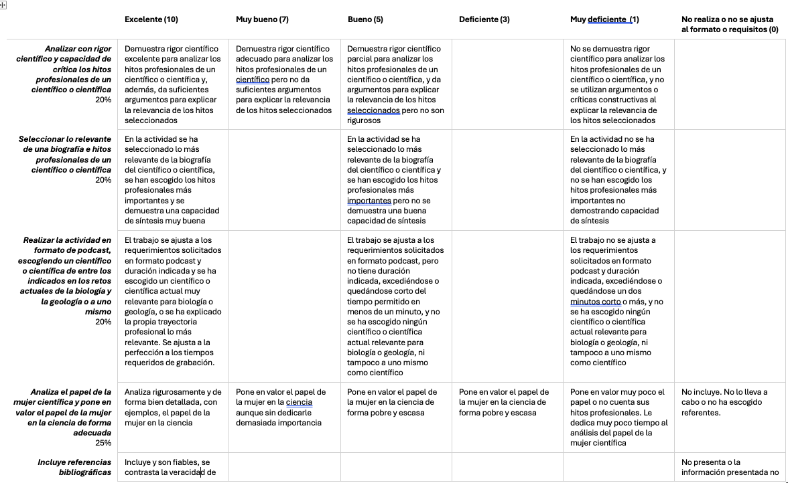

Actividad final: Búsqueda de información y grabación del podcast
- Duración:
- 00:55
- Agrupamiento:
- Equipos 3-4 personas
AULA DE INFORMÁTICA PARA LA ELABORACIÓN DEL PRODUCTO FINAL
Instrucciones para la realización del podcast: Trabajo por equipos de 3-4 personas (a modo de entrevista, programa radiofónico, tertulia entre científicos, entrevista a un científico...). Formato: Podcast
Tiempo de podcast: 3 minutos en total (dividido a partes iguales) (márgenes aceptables de 15 segundos por encima y por debajo del tiempo requerido). Infracciones en el tiempo serán penalizadas conforme rúbrica. La estructura del podcast ha de ser ajustada al tiempo, es decir, no es aceptable que de pronto, lleguen a 3 minutos y corten la grabación sin respetar una estructura de introducción , desarrollo de la entrevista, desenlace o preguntas finales.
Objetivos
A través de esta actividad conseguirás reflexionar sobre los referentes científicos y profesionales en áreas científicas de la biología o la geología y contar en pocos minutos lo que han hecho esos científicos o científicas importantes para ti.
Por último, investigar, indagar y buscar una historia de un divulgador o una divulgadora os permitirá transmitir no solo la ciencia, sino además el contexto dónde se han producido esos hitos científicos.
Pautas de elaboración
El trabajo consiste en pensar en la historia profesional de alguna divulgadora o científica o científico que conozcamos bien o nos haya interesado mucho. Prepararla como si fuésemos periodistas científicos (por parejas) de un programa de radio que, en cuatro minutos máximo, tenemos que contar los hallazgos más importantes.
Seleccionar la historia para contar los puntos más relevantes de los descubrimientos o historia de este científico y grabarlo para un posible programa de radio.
Utilizaremos la grabadora en línea del siguiente enlace: https://vocaroo.com/
Una vez grabada nuestra historia, daremos a guardar y compartir y nos saldrá un enlace. Este enlace se copia en esta actividad y se incluye en la plataforma como actividad.
Extensión y formato
La duración de la grabación es de tres minutos. Se aceptan márgenes de 15 segundos por encima y por debajo del tiempo indicado. De no ajustarse al tiempo indicado en la actividad se penalizará conforme a lo estipulado en la rúbrica adjunta.
El podcast será evaluado conforme a la siguiente rúbrica de evaluación y ha de ser entregado a través de la plataforma Teams en la fecha y hora indicadas:
